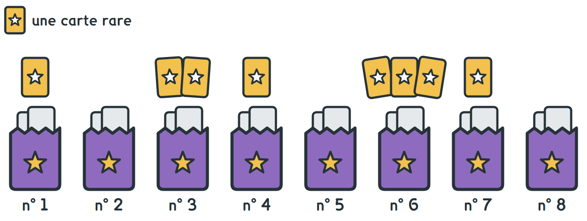
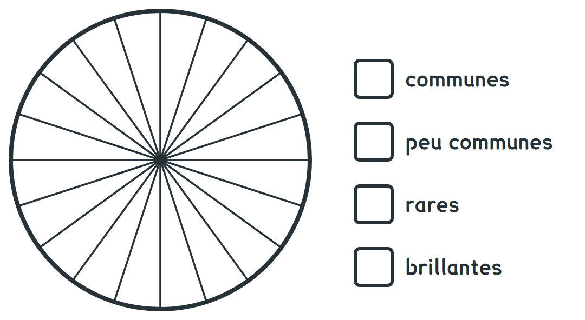
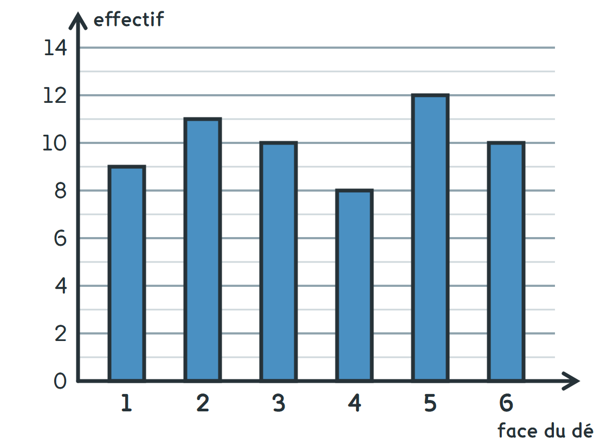
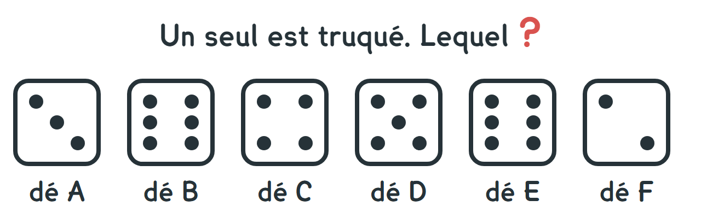

CAP Électricien · 1re année
Une moyenne et deux diagrammes résument une série. Et un dé truqué se démasque, à condition de lancer assez : pas en vingt lancers, mais vers soixante.
6 questions · 6 exercices · 29 items d'entraînement · 4 figures
Savoirs travaillés
Un dé truqué se voit en combien de lancers ? Recopie ta réponse du premier jour : à la fin de la séance, on la relit.

Yanis a ouvert 8 boosters. Pour dire combien il trouve de rares par booster, en moyenne, on additionne les rares de tous les boosters, puis on divise par le nombre de boosters.
moyenne = somme des valeurs ÷ nombre de valeurs
2 et 4 rares : (2 + 4) ÷ 2 = 3.
Série · SP
Exercice · SP
Combien de rares par booster, en moyenne, sur les 8 boosters de Yanis ?
Oublier les boosters sans rare. 8 ÷ 5 = 1,6 : on a divisé par les seuls boosters qui avaient une rare. Un booster vide compte : il est l’un des huit.

Inès range sa collection de 40 cartes : 20 communes, 10 peu communes, 8 rares et 2 brillantes. Le disque a 20 parts égales : une part, c’est 2 cartes. La part de chaque sorte de carte dans le disque est sa fréquence.
Série · SP
Série · SP

Chaque bâton dit combien de fois une face est sortie : on lit sa hauteur sur l’axe de gauche. Les bâtons additionnés donnent le nombre de lancers.
Série · SP

Chaque équipe lance son dé 20 fois par manche, trois manches. Un seul dé de la classe est truqué. On accuse avec deux nombres : le nombre de 6 et le nombre de lancers. Un dé juste fait 6 environ une fois sur six, 0,17.
Exercice · SP
Après trois manches, le dé C a fait 21 six sur 60 lancers. Quelle est sa fréquence du 6, au centième ?
Un dé truqué se démasque sur un grand nombre de lancers. Après une manche, deux dés peuvent avoir 6 six sur 20 : on ne peut pas savoir. Sur 60 lancers, un dé qui reste deux fois au-dessus de 0,17 n’a plus l’excuse de la chance.
Série · CN
Exercice · SP
Hugo lance 10 fois : 3, 6, 1, 4, 4, 2, 6, 5, 3, 1. Quelle est sa moyenne ?
Exercice · SP
Un booster coûte 5 €, et un booster sur 20 contient une brillante. Combien dépense-t-on, en moyenne, pour en avoir une ?
Exercice · SP
Trois boosters : 0, 0 et 6 rares. Un vendeur écrit « 2 rares par booster ! ». Qu’en penser ? Répondre en une ou deux phrases.
Une probabilité se lit sur les issues, une fréquence se mesure, et sur beaucoup de lancers la fréquence se rapproche de la probabilité. C’est pour cela qu’un dé truqué ne se voit pas en vingt lancers, mais se trahit vers soixante.
Un seul problème, qui reprend toute la séquence 3. On le fait d’un bout à l’autre, comme un vrai : il n’y a pas d’indication de méthode en cours de route. À la fin, on produit son fichier de réponses.
Un booster coûte 4 €. D’après le fabricant, un booster sur 20 contient une carte brillante, qui se revend 30 €.
Samir a ouvert 20 boosters et obtenu 3 brillantes. Il dit : « Ça rapporte : j’ai revendu plus cher que ce que j’ai dépensé. »
La question : « Acheter des boosters pour revendre les brillantes, est-ce que ça rapporte ? »
Lire la situation
a) Relever le prix d’un booster, la proportion de boosters à brillante, et le prix de revente d’une brillante.
b) Dire ce que Samir a obtenu, et sur combien de boosters.
Choisir la méthode
c) Dire comment on calcule une probabilité, et comment on en déduit le nombre de brillantes attendu sur 100 boosters.
d) Dire pourquoi le résultat de Samir ne suffit pas à décider.
Calculer
e) Calculer la probabilité d’une brillante, en pourcentage, puis le nombre de brillantes attendu sur 100 boosters.
f) Calculer ce que coûtent ces 100 boosters, et ce que rapportent les brillantes attendues.
g) Calculer la fréquence obtenue par Samir, en pourcentage, puis ce que lui ont coûté ses 20 boosters et ce que rapportent ses 3 brillantes.
Conclure
h) Répondre à la question par une phrase chiffrée, et dire ce qu’on répond à Samir.
Série · SP
Exercice · SP
Répondre à la question en une phrase avec les chiffres, puis dire en une phrase ce qu’on répond à Samir.
Ce site rappelle la méthode. Aucun corrigé, rien n'est noté.